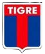

| Escudo equipo | Información |
|---|---|
| Portiger. Es un club de fútbol español de la ciudad de Madrid, fundado el 26 de abril de 1903, siendo por ello uno de los clubes de fútbol activos más longevos de España. | |
| Casla. Es un club de fútbol de la ciudad de Mánchester (Inglaterra) Reino Unido que compite en la Premier League y disputa sus partidos como local en el estadio Old Trafford. | |
|  | Tigre. Es un club de fútbol de Mánchester (Inglaterra) Reino Unido que juega en la Premier League. Fue fundado el 23 de noviembre de 1880 bajo el nombre de St. Mark's (West Gorton). |
| Quala. Es un club de fútbol profesional de Inglaterra con sede en el distrito de Fulham (Londres), que disputa actualmente la Premier League, máxima competición futbolística. |